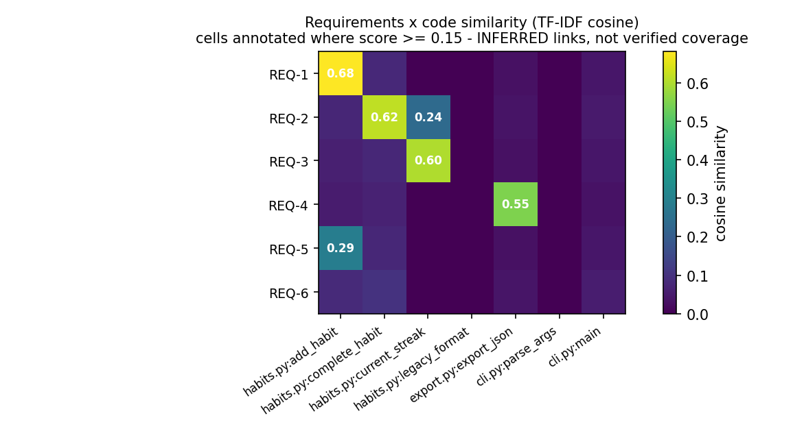

A Gemini-authored proposal for maintaining a Requirements Traceability Matrix automatically, in both directions: forward (requirement to architecture to code) and backward (code back to the business requirement that motivated it). The preserved proposal and framing notes live in the GitHub repository.
This page is a static overview. The heatmap below comes from
rtm.py, which runs locally with Python - nothing runs
in your browser. Every link it reports is an inferred heuristic match, not
verified coverage.
git clone https://github.com/irvan-putra/jejak.git cd jejak python3 -m pip install matplotlib # only needed for --viz python3 rtm.py # text report on the embedded example python3 rtm.py --viz rtm_heatmap.png # similarity heatmap (needs matplotlib) python3 rtm.py --reqs REQS.md --src src/ # trace your own project

tap the image to open it full size
On the embedded example project, the script links five of six requirements to code units (forward) and flags one requirement with no inferred code link - a possible coverage gap - plus three code units with no inferred requirement link - possible orphan code. That is exactly the insight an RTM is for, but the links are TF-IDF similarity heuristics: a strong link does not prove a requirement is implemented, and a weak one does not prove it is missing. A real system would need precision/recall measured against human-confirmed traces.
Idea stage: the proposal is preserved as an attributed record, with no novelty
or priority claim, and this demo is an illustration of the concept, not a
validated tool. See framing-and-limitations.md. The proposal text is
attributed to Google Gemini.
Suggestion, not a commitment or a result: make the next milestone evidence,
not more features. Try rtm.py on one small real Python repo with
5-10 requirements. Write down the expected requirement-to-code links yourself
before running it, then grade its suggestions: useful, wrong, or missed.
The script already accepts requirements and a source directory
(--reqs REQS.md --src src/), so that tests something real without a
bigger platform build.
If the links help, a PR-check integration becomes worth considering. If they are mostly noise, improve the matching or park it cheaply. Either result is useful, and could become an honest portfolio write-up if shared.